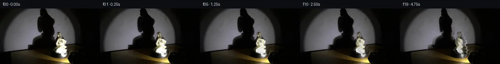

![首帧]()

Round 00
2026-11-05T05:11:24.642042+00:00像素候选变化代码 +314/−0inspection 更新
pixels 2aeb86aabb4131d2 · code 42893a054fe8ca60
查看本轮 generate.py 真实 diff
--- previous/generate.py
+++ current/generate.py
@@ -0,0 +1,314 @@
+"""Local photograph-textured, analytic 2.5D rotation. No external renderer/model."""
+from pathlib import Path
+import json
+import numpy as np
+from PIL import Image, ImageDraw
+import cv2
+from scipy.ndimage import gaussian_filter, gaussian_filter1d, binary_dilation
+from scipy.sparse import lil_matrix
+from scipy.sparse.linalg import spsolve
+from artifact_io import save
+
+ROOT = Path(__file__).resolve().parent
+H, W, SS = 144, 256, 4
+SOURCE = np.asarray(Image.open(ROOT / 'first_frame.png').convert('RGB'))
+Y, X = np.mgrid[:H, :W].astype(float)
+WALL_LIMIT = 115.0 - .116 * X
+
+# Outline measurements taken from input pixel rows. Left boundary includes the
+# dim veil and left drapery, rather than only the saturated white porcelain.
+PROFILE = np.array([
+ [60.3,151.0,154.0], [61,149,155], [63,147,156.5],
+ [65,146,159], [67,147,160], [69,148,160],
+ [71,146,161], [73,145,165], [75,144,165.5],
+ [77,143.5,165.5], [79,145,166], [81,145,167],
+ [83,145,171], [84,145,173], [86,144.5,172],
+ [88,143.5,171], [90,143,169.5], [92,143.5,167],
+ [94,145,167], [96,147,167.5], [98,147,172],
+ [100,144.5,173], [102,143,171], [104,141,169.5],
+ [106,140,175], [108,140,174], [110,141,172],
+ [112,141.5,171.5], [114,143,174], [115,146,175],
+ [116,150,175], [117,154,174], [118,155.5,173],
+ [120,155.5,172], [122,156.5,171], [124,157.5,170],
+ [125.5,160,166.5], [126,162,164]
+], dtype=float)
+ROW_Y = np.arange(H, dtype=float)
+LEFT = np.interp(ROW_Y, PROFILE[:,0], PROFILE[:,1])
+RIGHT = np.interp(ROW_Y, PROFILE[:,0], PROFILE[:,2])
+CENTER = (LEFT + RIGHT) / 2
+RADIUS = (RIGHT - LEFT) / 2
+DEPTH = RADIUS * np.interp(ROW_Y,[60,70,80,93,106,116,126],
+ [.80,.75,.72,.76,.85,.64,.72])
+STATUE_AXIS = 161.0
+
+
+def sample(array, u, v, border=cv2.BORDER_REPLICATE):
+ return cv2.remap(array.astype(np.float32), u.astype(np.float32),
+ v.astype(np.float32), cv2.INTER_LINEAR, borderMode=border)
+
+
+def silhouette_mask():
+ # Supersampled silhouette with photograph's naturally dark outer folds.
+ yy, xx = np.mgrid[:H*SS,:W*SS].astype(float)
+ xx = (xx+.5)/SS-.5
+ yy = (yy+.5)/SS-.5
+ l = np.interp(yy,PROFILE[:,0],PROFILE[:,1])
+ r = np.interp(yy,PROFILE[:,0],PROFILE[:,2])
+ m = ((xx>=l)&(xx<=r)&(yy>=PROFILE[0,0])&(yy<=PROFILE[-1,0]))
+ return m.reshape(H,SS,W,SS).mean((1,3)).astype(np.float32)
+
+
+STATUE_MASK = silhouette_mask()
+
+
+def harmonic_wall(image, hole):
+ """Smooth continuation of the measured spotlight field inside occlusion."""
+ positions = np.argwhere(hole)
+ ids = np.full((H,W),-1,int)
+ ids[hole] = np.arange(len(positions))
+ mat = lil_matrix((len(positions),len(positions)),dtype=float)
+ rhs = np.zeros((len(positions),3),float)
+ # The illumination field is smooth; source photographic texture outside
+ # the hole is retained without any global changes.
+ measured = gaussian_filter(image.astype(float),sigma=(1.0,1.0,0))
+ for i,(y,x) in enumerate(positions):
+ count = 0
+ for dy,dx in ((1,0),(-1,0),(0,1),(0,-1)):
+ ny,nx = y+dy,x+dx
+ if not (0<=ny<H and 0<=nx<W):
+ continue # Neumann boundary where shadow leaves the top edge.
+ count += 1
+ if hole[ny,nx]:
+ mat[i,ids[ny,nx]] = -1
+ else:
+ rhs[i] += measured[ny,nx]
+ mat[i,i] = count
+ result = image.astype(float).copy()
+ result[hole] = spsolve(mat.tocsr(),rhs)
… diff truncated; 227 more lines …